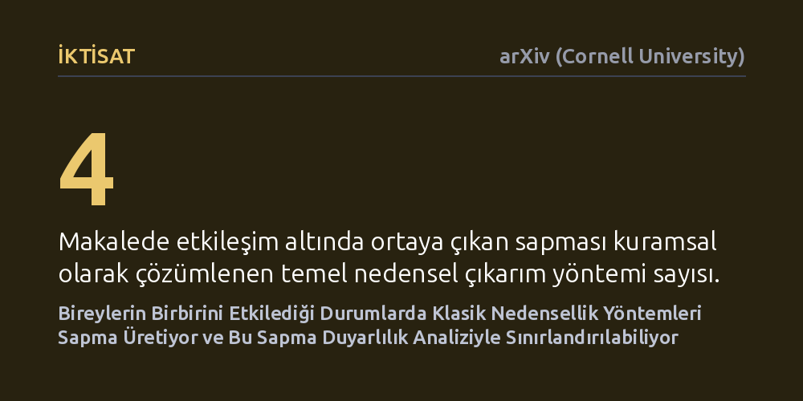

IKTISAT · arXiv (Cornell University) · 2026-10-20
Araştırmacılar, bir kişiye uygulanan politikanın başkalarını etkilediği durumlarda standart nedensellik yöntemlerinin ne kadar saptığını ve bu sapmanın nasıl giderilebileceğini inceledi. Dört yaygın yöntemin ürettiği yanılgıyı matematiksel olarak ayrıştıran çalışma, gerçek etkiyi güvenle sınırlandıran yeni bir duyarlılık analizi sundu.
Sosyal yardımlardan aşılama kampanyalarına kadar birçok politikanın gerçek etkisini ölçerken insanların birbirini etkilemediği varsayımının sonuçları nasıl çarpıttığını ve bu çarpıklığın nasıl hesaplanabileceğini ortaya koyar.

Sosyal bilimlerde ve politika değerlendirmelerinde temel amaç, bir programın (örneğin bir eğitim bursunun, aşı kampanyasının veya işe alım desteğinin) birey üzerindeki doğrudan etkisini ölçmektir. Ancak araştırmacılar çoğunlukla her bireyin yalnızca kendisine uygulanan müdahaleye tepki verdiğini ve çevresindekilerden hiç etkilenmediğini varsayar. Gerçek hayatta ise insanlar birbiriyle sürekli etkileşim halindedir; mahalledeki bir kişinin aşılanması yanındakini korur veya bir grubun iş bulma eğitimi alması diğer adayların iş bulma şansını değiştirebilir.
İnsanların birbirini etkilediği bu duruma ekonometride 'müdahale etkileşimi' veya yayılma etkisi adı verilir. Çoğu zaman bu etkileşimi doğrudan gözlemlemek veya haritalandırmak mümkün değildir. İşte bu makalenin yanıt aradığı temel soru burada ortaya çıkıyor: Birbirini etkileyen insanların yer aldığı bir ortamda, bu etkileşimi tamamen yok sayan klasik istatistiksel modeller kullandığımızda bulgularımız ne kadar sapar ve gerçeği ne derece yansıtır?
Yazarlar bu soruya yanıt vermek için uygulamalı iktisatta en sık başvurulan dört temel nedensellik yöntemini mercek altına aldı: gözlemlenebilir değişkenlere göre seçim, araç değişkenler, keskin regresyon süreksizliği ve farkların farkı modelleri. Bu yöntemlerin her birinde, bireylerin birbirinden bağımsız olduğu varsayımı altında türetilmiş formüllerin, serbest ve keyfi bir etkileşim ortamında gerçekte neyi hesapladığı matematiksel olarak adım adım modellendi.
Kuramsal ispatların ardından geliştirilen yaklaşımın pratik geçerliliğini sınamak amacıyla iki yönlü bir uygulama yapıldı. İlk olarak, değişkenlerin hassas biçimde kontrol edilebildiği kalibre edilmiş bir bilgisayar simülasyonu çalıştırıldı. İkinci adımda ise iş gücü piyasasına yönelik ampirik bir vaka seçilerek, geçici iş bulma kurumlarının istihdam üzerindeki etkisini inceleyen gerçek bir çalışma yeni yöntemle baştan analiz edildi.
Çalışmanın ilk ana bulgusu, klasik modellerin ürettiği sonucun aslında 'ortalama doğrudan etki' ile sisteme özgü bir 'sapma' toplamından ibaret olduğunu gösteriyor. Üstelik bu sapma terimi tesadüfi değildir; bireyler arasındaki yayılma etkisinin büyüklüğü ile karşılaştırma gruplarındaki kişilerin diğer insanlarla etkileşim yoğunluğunun çarpımına eşittir. Bu sapma, ancak gruplar arasındaki dağılım koşullu olarak tamamen bağımsız olduğunda sıfırlanmaktadır.
Ne var ki gerçek veri setlerinde bu bağımsızlık koşulunun sağlanıp sağlanmadığını tek bir gözlem kümesiyle doğrudan test etmek imkânsızdır. Yazarlar bu kısıtı aşmak için varsayımı esneten yeni bir duyarlılık analizi geliştirdi. Bu analiz sayesinde araştırmacılar, etkileşimlerin anonim olduğu ve yalnızca gruptaki yararlanıcı oranına dayandığı durumlarda bile gerçek nedensel etkinin hangi alt ve üst sınırlar arasında yer aldığını matematiksel güvenle hesaplayabilmektedir.
Bu bulgular, bugüne kadar 'etkileşim yok' varsayımıyla yapılmış pek çok ampirik araştırmanın sonuçlarına ihtiyatla yaklaşılması gerektiğini hatırlatıyor. Eğer bir istihdam programı veya sosyal yardım paketi değerlendirilirken komşuluk ya da iş yeri düzeyindeki yayılmalar göz ardı edilmişse, uygulamanın başarısı olduğundan çok daha yüksek ya da düşük görünmüş olabilir.
Geliştirilen duyarlılık analizi, araştırmacılara etkileşim ağını tam olarak bilemeseler dahi ellerindeki mevcut grup dağılımlarını kıyas noktası alarak sağlam çıkarımlar yapma imkânı veriyor. Bu yöntem sayesinde, karmaşık sosyal etkileşimlerin bulunduğu ortamlarda bile uygulanan kamu politikalarının gerçekte işe yarayıp yaramadığı çok daha güvenilir biçimde denetlenebilecektir.